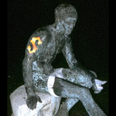
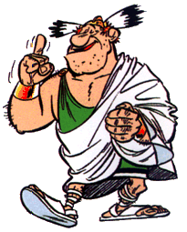

Forums galactiques > Assemblée Galactique : diplomatie officielle > Archives des présentations
Pages : 1 2 ... 5 6 7 ... 63 64
| Ace Azzamen Respect diplomatique : 1199  04/02 ETU 18:21 | Score : 10 Détails ///// Un jeune commandant humain entra pour la première fois dans l'auguste salle de l'assemblée.
Vêtu très simplement, aucun orment ne se distinguait de sa tenue, si ce n'était peut-être ce pistolet à projectiles qui pendait à sa ceinture. Il regarda chacune et chacun des commandantes et commandants présents de ses yeux pétillants mais où brillaient une lueur inquiétante. Ses cheveux en bataille, son vêtement on ne peut plus commun, et sa démarche souple et silencieuse, rien n'indiquait son statut de commandant. Il avisa un siège posté à l'écart, d'où il pouvait voir le projecteur holographique et l'ensemble des commandants et s'y dirigea d'un pas calme et décontracté. Un des commandants présents l'attrapa par la veste. Dans un geste extraordinairement fluide et rapide, il dégaina son pistolet et le plaqua contre le menton de la personne. Après quelques secondes, il rengaina son arme, puis prit la parole. ///// "Vous avez raison, commandant, je ne me suis pas présenté. Evitez cependant ce genre de gestes brusques, cela me met mal à l'aise. Mon nom est Ace Azzamen. Je suis un ancien pilote de chasse qui a émigré dans cette Galaxie à la suite d'un ... différent qui a mal tourné avec mon supérieur. Il voulait me voir détruire un vaisseau sans défense... Paix à son âme. Mes valeurs sont le respect, l'honneur, la solidarité et l'égalité des sexes. J'entends conserver ses idéaux en dépit des bassesses de la politique. Je suis ouvert à toutes discussions, négociations, ... avec les commandants ici présents. Par contre, évitez de m'nevoyer tuer des civils sans défense. J'en concevrai comme une amertume et une visite de ma part sur votre planète n'aurait rien d'agréable." ///// Il eut un léger sourire, puis se racla la gorge ///// "Je vous remercie de m'avoir écouté et vous souhaite à tous une excellente continuation." ///// Il inclina légèrement le torse en guise de salut puis alla simplement s'asseoir. ///// | ||
| Medrevas Respect diplomatique : 5 04/02 ETU 18:44 | Score : 5 Détails Un nouvel hologramme aparut ensuite. Une femme en uniforme fit son apparition. Elle fixa un instant la caméra holographique avant de gratifier les observateurs d'un sourire malicieux.
"Je me nomme Medrevas, je viens d'être promue à la tête du gouvernement de la planète Iasoth. Nous organisons actuellement les structures internes de notre planète, organisons définitivement notre planète. Nous rattifierons prochainement notre constitution. Celà étant, je compte également mener une politique diplomatique intensive, tant sur le plan commerciale que géostratégique. Avis aux amateurs de renseignements utiles. Bien à vous. Medrevas, dirigeante de Iasoth ---Fin de communication--- | ||
| Kryllenne Respect diplomatique : 596  04/02 ETU 19:12  | Score : 5 Détails [...Tour à tour, les nouveaux Commandant(e)s se présentaient dans l'Assemblée... Une silhouette frêle au fond de la salle, au regard triste et en colère à la fois se leva et prit la parole nerveusement...]
- "Mon Bonsoir à l'Assemblée et mes salutations à tous. Je suis Kryllen, Commandante de la Guilde du Commerce depuis peu..." [Elle prît calmement sa respiration et continua...] - "En effet, j'ai décidé de reprendre les affaires commerciales de mon défunt père. Suite à une attaque d'un vaisseau de l'Alliance, qui nous a valu l'isolement dans cette Galaxie et la perte de quelques vaisseaux commerçants, nous nous sommes retrouvés sur une planète inconnue, dont je m'éfforcerais en honneur à mon père de faire prospérer et pouvoir ainsi établir des échanges commerciaux. Que les transactions vous soient favorables et sur ce, à bientôt, ici ou ailleurs..." [La dame aux longs cheveux noirs se retira, sa main devant sa bouche dont quelques larmes scintillants coulaient maintenant sur son visage...] | ||
| kalich Respect diplomatique : 131  04/02 ETU 19:51 | Score : 7 Détails Un commandant entra pour la première fois dans l'auguste salle de l'assemblée. Vêtu d'une armure noîratre avec des motifs rouges, aucun autres symboles ne fût visible sur son armure si ce n'était peut-être un blaster qu'il tenait dans sa main.
"Salutations, commandantes et commandants, Je me présente Kalich, seigneur de combat de l'Empire des Ex Machina, Je suis né sur une grande planète reculée, nommer Artéas, Mes parents étaient membres des forces spéciales de Xion, Plusieurs vaisseaux Xindi nous ont attaqués sans sommation et je me suis rendus compte que je possedais des dons pour la guerre et la destruction de forces armées. J'ai rencontré Ace Azzamen et Cobs au cours d'une partie de chasse entre potes car plusieurs mercenaires sont venus nous chercher des noises, ils ont eux un regrétable accident de parcours ( avis aux amateurs). J'ai les mêmes valeurs que Ace, j'entends conserver ses idéaux en dépit des bassesses de la politique. Je suis ouvert à toutes discussions, négociations, ... avec les commandants ici présents." Il se sortit et personne ne pût voir son visage... | ||
| dr grabry ponte Respect diplomatique : -6 04/02 ETU 22:40 | Score : 8 Détails ^^^^^^le docteur s'aproche de son parloir^^^^^^^^^
je me presente dr grabry ponte specialiste en chirurgie de toute sorte extraction d'organe retour a la vie de dfunt personne est heureux de faire partie de la grande famille d'apocalypsis | ||
| l'ange de la mort Respect diplomatique : 0  04/02 ETU 22:40 | Score : 1 Détails *l'ange de ma mort se leva et comme a son habitude toute le scommandants se mirent a tremblés devant sa coarure imposante, son regard perçant.*
il pris une légère inspiration et ditde sa voix percente: _"je me présente l'ange de la mort, commandant en misson pour les enfers de trouver et dretruire tous les commandants contre la paix et la démocratie afin qu'il regagne leur place au coté de satan. | ||
| Hermes Respect diplomatique : 8  05/02 ETU 11:16 | Score : 4 Détails Hermes, le dieu Grec du commerce s'avança.
Bonjour à toutes et à tous! Je suis ici pour me présenter moi-même ainsi que mon commerce. Je suis né des cendres du Batracien de la galaxie 0, j'ai donc hérité des technologies qu'il avait mises en places pour son commerce. Je vous présenterais toutes ces facilités de commandes sur le forum dédié au commerce. Je souhaite entretenir avec vous d'excellentes relations. Hermes se retira pour aller fournir les étales de son commerce naissant. | ||
| Crow Respect diplomatique : 6 05/02 ETU 20:57 | Score : 6 Détails pfou, pfou....
Ralala vraiment mare de courir... Plus de mon age tout ca.. Hein ? Mais ? Dans quel endroit suis-je encore tomber ... J'ai passer ma vie a courir pour echapper a mes creanciers et aux autorites. Oui oui quelques amendes impayées... Bref me voici arriver ici et comme il faut bien vivre je me suis lancer dans le business... Malgré mon passé de rebus de justice je peux affirmer que je suis quelqu'un de tres sociable et si quiquonque d'entre vous a besoin de quoi que ce soit ( le trafic d'armes c'est l'avenir ! ) qu'il me le demande. Bien a vous et a bientot, Crow; | ||
| akagi Respect diplomatique : 21 06/02 ETU 13:19 | Score : 4 Détails L'hologramme tremblait quelque peu, sans doute des interférences parasites dues à la grande distance avec la source de transmission
" Mon commandant Akagi, je viens de prendre le contrôle d'une planète neutre et cela afin de ne plus être dirigé par personne, mon supérieur précédent n'est plus, tout cela à cause d'une étrange maladie qui l'a amené à ne plus pouvoir respirer. J'entend continuer les relations pacifiques qui étaient l'habitude de mon supérieur et cependant je ne serai pas pacifique si je dois me défendre. " L'hologramme disparut, laissant la possibilité au commandant Akagi de revenir jouer à sa partie de mah jong. | ||
| Docteur Aplusbegalix Respect diplomatique : 4  08/02 ETU 17:55 | Score : 6 Détails Bonjour tout le monde,
Je suis un nouvel arrivant sur cette galaxie, qui me semble pourtant familière. Je ne connait pas du tout cette galaxie, et j'espère très vite me ranger avec les plus honnêtes. Salutations Doc Aplusbegalix | ||
| Capitaine Bloten Respect diplomatique : 70 13/02 ETU 09:43 | Score : 0 Détails merci de ne pas voter ce message, il s'agit d'un petit up pour que les bnouveaux sachent où se présenter et donc pour éviter l'egorgement de l'Assemblée avec des topics de présentations d'un seul commandant! Merci.
| ||
Respect diplomatique : 12  17/02 ETU 09:58 | Score : 1 Détails Bonjour à tous. Je me joins à l'aventure...
| ||
| dechiketeur Respect diplomatique : 111  17/02 ETU 10:16 | Score : 0 Détails Bienvenue à vous monsieur...euh...oui vous ! Quel est votre nom ?
| ||
| imperatrice Jade Respect diplomatique : 469  17/02 ETU 10:19 | Score : 3 Détails Quel est ton nom cher commandant,le commandant invisible ou c'est une tromperie qui doit nous faire peur,je trouve sa etrange justifie de ton identitée stp car ce n'est pas bien de ne pas savoir a qui on a à faire.
L'Impératrice parti songeuse,car cette assemblée était de plus en plus peuplée par d'étranges créatures dont elle n'avait jamais soupçonnée l'existance. | ||
Respect diplomatique : 12 17/02 ETU 10:20 | Score : 1 Détails Nul besoin de connaître mon identité, Commandante Jade...
| ||
| dechiketeur Respect diplomatique : 111 17/02 ETU 10:27 | Score : -2 Détails Je conçoit que tu ne veules pas dire ton nom, mais nous ne pouvons te parler en privé, ce qui est très désobligent.
N'as tu point de surnom, pour que nous puissions t'appeler ou t'interpeler ? | ||
Respect diplomatique : 12 17/02 ETU 10:30 | Score : 3 Détails euh...bonne question...à vrais dire...je n'en ai pas. Mais très cher Dechiketeur, il me semble vous avoir rencontré au cours d'une de mes escapades inter-galactique. J'ai fait un long, long voyage pour essayer de mieux connaître cette galaxie et je ne resterai probablement pas très longtemps. Dans un soucis de discrétion, j'ai du me délester de mon nom au moment de monter dans mon CLA Impérial.
Je loge actuellement sur une planète de votre galaxie, mais je compte bien vous la restituer lors de mon départ. Si vous voulez me parler, je peux vous contacter. Vous n'aurez plus qu'à répondre... | ||
| dechiketeur Respect diplomatique : 111 17/02 ETU 10:38 | Score : -3 Détails Pourquoi parlez vous déjà de départ ?
Je voudrai bien que vous me contactiez, j'ai des choses à vous demander. | ||
| Kryllenne Respect diplomatique : 596 17/02 ETU 11:42 | Score : 4 Détails Salutations et Bienvenue cher(è) anonyme,
Les raisons de votre 'absence' de nom de Commandant et de votre histoire, vous regardent. Nous ne sommes pas là pour vous juger. J'éspère que vous trouverez ce dont vous cherchez. Aux autres nouveaux Commandants, n'hésitez pas à vous présenter brièvement afin de faire connaissance. Bien cordialement, Kryllenne | ||
| Alex Rider Respect diplomatique : 748  17/02 ETU 12:03 | Score : 7 Détails Le jeune Alex Rider entra dans l'Assemblée.
De nombreux commandants se retournèrent sur son passage. Il était vêtu comme n'importe quel adolescent de la préhistoire: un simple jean, une veste de jogging grise et une paire de baskets blanches. Sa tenue démodée détonnait dans l'atmosphère moderne et métallique de l'Assemblée. Il avait un regard étonamment dur et grave pour ses 14 ans, ce qui lui donnait un air plus âgé. Et plus inquiétant aussi. Il s'avança vers le pupitre. On lui avait déjà tout expliqué. Il prit la parole: "Euh...hum...b...bonjour à tous. Je m'appelle Alex Rider et ma situation est un peu...compliquée." Compliquée, ce n'était pas peu dire! Il y'a 6 mois (à son époque, en l'an 2005), il avait été contraint de prendre ses fonctions d'espion pour le MI6! Depuis, Alex avait sauvé 6 fois le monde et échappé à la mort plus d'une fois, ce qui expliquait la dureté de son regard. Malheureusement, sa septième mission avait mal tourné: sa couverture avait sauté et il avait servi de cobaye à une expérience folle: se faire projeter dans un futur lointain! Expérience, qui avait malheureusement porté ses fruits. Alors Alex avait atterri là, et avait demandé aux commandants de lui expliquer la situation, ce qu'ils avaient très gentiment fait. Alex résuma sa situation à l'Assemblée puis, il décida d'en venir au fait: "En attendant un moyen de rentrer chez moi -car je suis sûr qu'il y'en a un- je suis en mesure d'annoncer à cette Assemblée que je prends mes fonctions de commandant d'Espérance" Des murmures de désaprobbation se firent entendre dans toute l'Assemblée. Comment un gamin pouvait-il influencer l'avenir de la Galaxie? C'était à mourir de rire. Alex quitta le pupitre. Tout au fond de lui-même, il était confiant. Après tout, il avait sauvé le monde et échappé à la mort! Pourquoi ne pourrait-il pas prendre les rênes d'un Empire? De toute façon, il n'avait pas le choix. Les adultes ne lui accordaient aucune confiance. Pour le moment, il allait devoir se débrouiller seul et prendre des initiatives... Sur ces pensées, le garçon quitta l'Assemblée, sous les huées des autres commandants... |
Pages : 1 2 ... 5 6 7 ... 63 64
Forums galactiques > Assemblée Galactique : diplomatie officielle > Archives des présentations